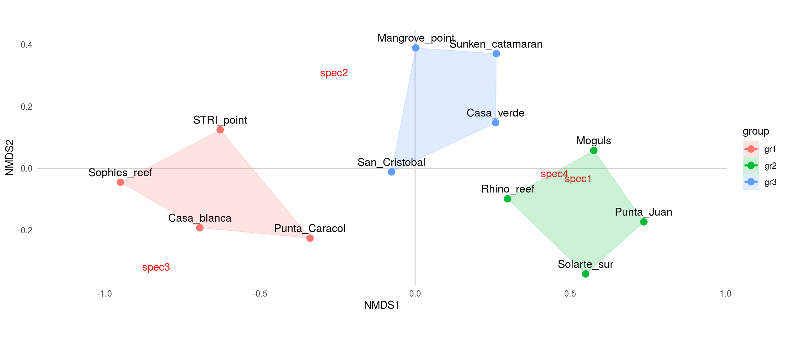
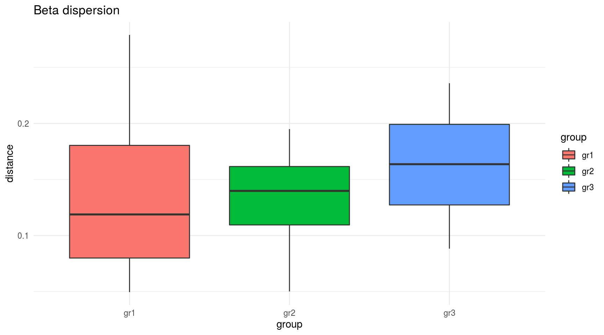
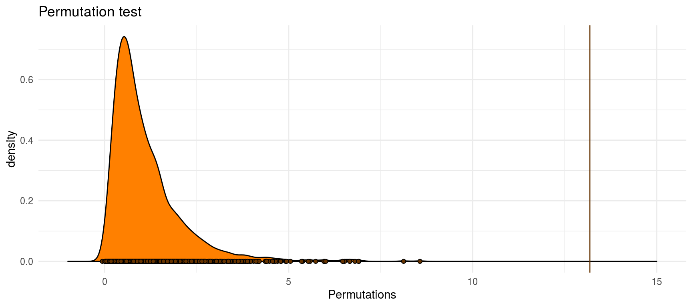

3 NMDS/PERMANOVA template
This template is based on the methods from the Hench et al. (2017) paper which compares hamlet observation at Puerto Rico reefs from 2000 (by Aguilar et al. 2003) and from 2017. The data that is used is completely made up though.
Here we will generate NMDS plots and run a PERMANOVA to test the significance between the different clusters of three fictional reef types.
Most of the analysis makes use of the functions provided by the vegan package (mostly metaMDS() and adonis()). Plotting is done using the ggplot2 package (included in tidyverse) with the extension packages cowplot and ggalt.
To start our R session we have to load the required R packages and set up our working environment:
library(vegan)
library(tidyverse)
library(cowplot)
library(ggalt)
darken <- function(color, factor = 1.4){
col <- col2rgb(color)
col <- col/factor
col <- rgb(t(col), maxColorValue = 255)
col
}Then we have to read in the data (provided in the data folder). The original data contains the observations as well as meta data (sampling location and and sample group):
data <- read_delim('permanova/data/more_sampling_spots.csv', delim = '\t') %>% select(-Latittude, -Longitude)| spot | group | spec1 | spec2 | spec3 | spec4 |
|---|---|---|---|---|---|
| STRI_point | gr1 | 1 | 4 | 5 | 1 |
| Casa_blanca | gr1 | 1 | 3 | 4 | 0 |
| Punta_Juan | gr2 | 5 | 0 | 1 | 4 |
| Punta_Caracol | gr1 | 0 | 3 | 3 | 3 |
| Mangrove_point | gr3 | 2 | 5 | 0 | 2 |
| Moguls | gr2 | 5 | 2 | 0 | 5 |
| Rhino_reef | gr2 | 4 | 2 | 1 | 2 |
| Sophies_reef | gr1 | 1 | 3 | 7 | 0 |
| Sunken_catamaran | gr3 | 4 | 5 | 0 | 2 |
| San_Cristobal | gr3 | 1 | 3 | 1 | 3 |
| Casa_verde | gr3 | 3 | 3 | 0 | 5 |
| Solarte_sur | gr2 | 5 | 0 | 2 | 3 |
3.1 NMDS
To be able execute the NMDS the species observations need to be exported as a matrix object. Here we are going to run the NMDS based on the Bray-Curtis distance between the samples using a max of 500 iterations.
dataM <- data %>% select(spec1:spec4) %>% as.matrix()
rownames(dataM) <- data$spot
NMDSout <- metaMDS(dataM, k = 2, trymax = 500, distance = 'bray')After we ran the NMDS, we have to export the scores both of the samples as well as of the species for plotting in ggplot2:
First, we extract the sample scores to a data.frame object using the scores() function from the vegan package and add a column to include the samples names.
Than we do the same for the species.
Finally, we merge the sample scores back to our original data set.
data.scores <- as.data.frame(scores(NMDSout))
data.scores$spot <- rownames(data.scores)
species.scores <- as.data.frame(scores(NMDSout, "species"))
species.scores$species <- rownames(species.scores)
data <- data %>% left_join(data.scores)## Joining, by = "spot"Now, we can plot the results of the NMDS using ggplot2:
# initializing the plot
ggplot(data, aes(x = NMDS1, y = NMDS2, group = group)) +
# fixed aspect ration for x and y scale
coord_equal() +
# adding line ad x = 0 and y = 0
geom_hline(yintercept = 0, color = 'lightgray')+
geom_vline(xintercept = 0, color = 'lightgray')+
# add the species labels
geom_text(inherit.aes = F, data = species.scores,
aes(x = NMDS1, y = NMDS2, label = species),
col = 'red') +
# add the sample positions
geom_point(aes(colour = group), size = 3) +
# add the outer hull of the three groups (function from the ggalt package)
geom_encircle(aes(colour = group, fill = group),
s_shape = 1, alpha = 0.2, size = 1, expand = 0)+
# add the sample labels
geom_text(aes(label = spot), size = 4, vjust = 0, nudge_y = .02) +
# change the coler map (from the hrbrthemes package)
scale_x_continuous(expand = c(.1, .1))+
theme_minimal()+
theme(panel.grid = element_blank())
3.2 PERMANOVA
Although we can visually inspect our NMDS plot for differences between our 3 groups, we do not know yet whether those differences are statistically significant.
To find out about this we need to run a permanova on our data. Yet, before we start, we need to check if the assumptions for permanova are met by the data (Anderson 2001):
To check for homogeneous dispersion, we can either use a statistical test (permutation test) or visualize the dispersion.
Either way, first we need to create the distance matrix (again, since it was not stored before but only computed internally within the metaMDS() function…).
Then we also need to find out in which order the sites are stored within the distance matrix (the order may differ from the original data) to assign the groups correctly. Than the beta dispersion can be computed and compared.
# compute Bray-Curtis distance
dM <- vegdist(dataM, distance = 'bray')
# get order of samples
gO <- data[match(labels(dM), data$spot), ]$group
# compute beta dispersion of the 3 groups
betaM <- betadisper(dM, gO)
# statistical test for homogeneous dispersion
permutest(betaM)##
## Permutation test for homogeneity of multivariate dispersions
## Permutation: free
## Number of permutations: 999
##
## Response: Distances
## Df Sum Sq Mean Sq F N.Perm Pr(>F)
## Groups 2 0.002086 0.0010430 0.1771 999 0.84
## Residuals 9 0.053012 0.0058903# visual check for homogeneous dispersion
ggplot(data.frame(group = betaM$group, distance = betaM$distances),
aes(x = group, fill = group, y = distance))+
geom_boxplot()+
ggtitle('Beta dispersion')+
theme_minimal()
If the dispersion is sufficiently homogeneous, we can finally run the PERMANOVA on the data (using the adonis() function from the vegan package):
permM <- adonis(formula = dM ~ gO, permutations = 1999, method = 'bray')
print(permM)##
## Call:
## adonis(formula = dM ~ gO, permutations = 1999, method = "bray")
##
## Permutation: free
## Number of permutations: 1999
##
## Terms added sequentially (first to last)
##
## Df SumsOfSqs MeanSqs F.Model R2 Pr(>F)
## gO 2 0.87737 0.43869 13.183 0.74552 5e-04 ***
## Residuals 9 0.29948 0.03328 0.25448
## Total 11 1.17685 1.00000
## ---
## Signif. codes: 0 '***' 0.001 '**' 0.01 '*' 0.05 '.' 0.1 ' ' 1A last thing we might want to do, is to get an overview over the Permutation Results from our PERMANOVA. We can compare our real case to the distribution created by the permutations:
plot_clr <- rgb(1, .5, 0)
# export the summary statistics from the PERMANOVA run
permOUT <- permustats(permM)
# transform into da data.frame
permDF <- permOUT$permutations %>% as_tibble() %>% setNames(., nm = 'Permutations')
# plotting
ggplot(permDF, aes(x = Permutations))+
# add the distribution frm the permutations
geom_density(fill = plot_clr)+
geom_point(aes(y = 0), shape = 21, fill = darken(plot_clr, 2.5))+
# add our realized value
geom_vline(xintercept = permOUT$statistic, col = darken(plot_clr, 2.5))+
# expand x scale
scale_x_continuous(limits = c(-1, 15))+
# plot title
ggtitle('Permutation test')+
theme_minimal()
References
Hench, K., W. O. Mcmillan, R. Betancur-R, and O. Puebla. 2017. “Temporal Changes in Hamlet Communities (Hypoplectrus Spp., Serranidae) over 17 Years.” Journal of Fish Biology 91 (5). Blackwell Publishing Ltd: 1475–90. doi:10.1111/jfb.13481.
Anderson, Marti J. 2001. “A New Method for Non-Parametric Multivariate Analysis of Variance.” Austral Ecology 26 (1). Blackwell Science Pty: 32–46. doi:10.1111/j.1442-9993.2001.01070.pp.x.